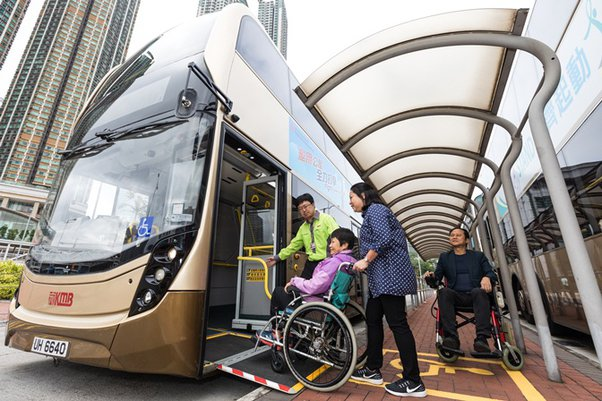

港鐵
港鐵系統將整個城市從北到南，東到西緊密聯繫。軌道全長174.7里，覆蓋82個車站，貫通觀塘、荃灣、港島、東涌、將軍澳、東鐵、西鐵、馬鞍山及迪士尼線。輪椅使用者可利用提供之公共升降機或輪椅輔助從街道進入各車站月台。
設施詳情在香港，行動不便人士可使用不同的交通工具來往市內各區及景點，包括乘坐公共交通服務﹝例如鐵巴士及港鐵﹞及 租用無障礙交通服務﹝例如星群的士及易達轎車服務﹞。
港鐵系統將整個城市從北到南，東到西緊密聯繫。軌道全長174.7里，覆蓋82個車站，貫通觀塘、荃灣、港島、東涌、將軍澳、東鐵、西鐵、馬鞍山及迪士尼線。輪椅使用者可利用提供之公共升降機或輪椅輔助從街道進入各車站月台。
設施詳情大型的士車廂寬敞，設輪椅上落斜板。不論是手推輪椅，還是電動輪椅，均可直上直入輪椅的士車廂內。輪椅人士外，可同時有2名乘客同車。
預定 / 查詢熱線: (852) 3700 6500
每部轎車均為七座位轎車，並配備了輪椅坡道和固定輪椅安全鎖。它最多容納2名輪椅使用者與另外2名陪同者，或最多1名輪椅使用者連同 5名陪同者。
預定 / 查詢熱線: (852) 8106 6616